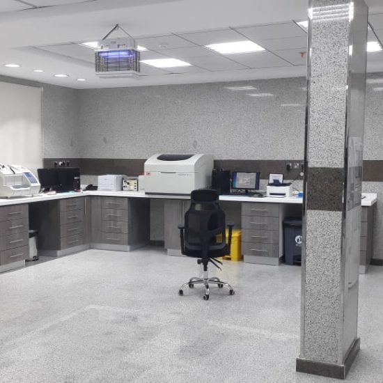

التحاليل الطبية:
هنالك عدد كبير من أنواع التحاليل الطبية، والتي يتم استخدامها في مجالات طبية مختلفة كتقييم الحالة الصحية للفرد،
وتشخيص الإصابة بالعديد من الأمراض والمشكلات الصحية، والكشف عن الإصابة بالأمراض الجينية، والتعرف على مدى كفاءة
عمل أعضاء الجسم كالكلى والكبد، وسيتم في هذا المقال الحديث عن بعض أنواع التحاليل الطبية:
1-صورة الدم:
يُعدّ تحليل صورة الدم الكامل (بالإنجليزية: Complete blood count-CBC) الاختبار الذي يقيس الخلايا التي يتكون
منها
الدم مثل: خلايا الدم الحمراء، وخلايا الدم البيضاء، والصفائح الدموية، ويُستخدم في تشخيص حالات فقر الدم، وفي كشف
المشكلات الصحية التي تتسبب بظهور صداع وحمى وتعب، ولمتابعة تأثير العلاجات والأدوية مثل: العلاج الكيميائي، ويجدر
الإشارة إلى أنّ هذا النوع من الفحوصات لا يحتاج لأي تحضيرات مسبقة.
2- فحص البول:
هو مجموعة من الاختبارات الفيزيائية والكيميائية والمجهرية، التي تقيس بعض المواد في البول ، مثل: الجلوكوز،
والبروتين، والبيليروبين، وخلايا الدم الحمراء، وخلايا الدم البيضاء، والبلورات، والبكتيريا، وغيرها، ويُساعد على
تشخيص ومراقبة العديد من الأمراض، مثل: مشكلات الكلى وعدوى المسالك البولية، أو في حال ظهور بعض الأعراض، مثل:
آلام
البطن، والظهر والتبول المتكرر، بالإضافة لاستخدامه في فحص الحمل، وفي حالات متابعة ما قبل الخضوع للجراحة،
وللحصول
على نتيجة دقيقة تُنصح المرأة بتنظيف المنطقة جيداً قبل إعطاء العينة، وعلى الرجل أن يمسح طرف القضيب قبل البدء
بالتبول، كما يجب ألا تُؤخذ العينة في بداية عملية التبول بل في منتصفها تقريباً، وإرسالها إلى المختبر خلال مدة
قصيرة أما في حالة كانت استغرق وصول العينة أكثر من ساعة فيجب تبريد عينة البول أو الاستفسار من الفني المُختص.
1- فحص البراز:
يُستخدم تحليل البراز في تشخيص بعض حالات حساسية الجسم مثل: الكشف عن حساسية بروتين الحليب عند الرضع، وفي حالات
حدوث العدوى التي تُسببها البكتيريا والطفيليات والفيروسات التي تُصيب الجهاز الهضمي، وعند حدوث مشاكل في الجهاز
الهضمي، مثل: سوء امتصاص العناصر الغذائية، ولتحديد نوع البكتيريا أو الطفيليات التي تُصيب الأمعاء، في أغلب
الأوقات
يمكن معرفة البكتيريا أو الطفيليات المسببة للأمراض من فحص عينة واحدة، ولكن في بعض الأحيان يتم أخذ ثلاث عينات من
مرات تبرز مختلفة لتأكيد التشخيص.
4- فحص سكر الدم:
ويُسمى بفحص مستويات الجلوكوز في الدم، فالجلوكوز هو نوع من السكر، في بعض الحالات قد ترتفع مستويات الجلوكوز في
الدم بشكل كبير وهذه الحالة قد تكون عرض للإصابة بمرض السكري، أو قد ينخفض عن مستوياته الطبيعية فيُسبب مشاكل صحية
كبيرة مثل: تلف الدماغ إذا لم يتم علاجه، قد يكون من الضروري الصوم ولمدة ثماني ساعات قبل الاختبار، وفي نوع آخر
من
فحوصات السكر مثل: فحص مستويات السكر عند الحامل يتم شُرب مشروب سكري قبل ساعة واحدة من سحب الدم.
5- فحص الكوليسترول:
والدهون يُستخدم فحص الدهون بشكل شائع في تقييم خطر الإصابة بأمراض القلب والأوعية الدموية، ومن الضروري الصوم
لمدة
9-12 ساعة قبل سحب عينة الدم، ويكشف هذا النوع من الفحوصات عن الكوليسترول الكلي (بالإنجليزية: Total cholesterol)
والكوليسترول الضار (بالإنجليزية: Low-density lipoprotein) والكوليسترول الجيد (بالإنجليزية: High-density
lipoprotein) والدهون الثلاثية (بالإنجليزية: Triglycerides)، ويُوصي الخبراء بمتابعة مستويات الكوليسترول كل خمس
سنوات، وبشكل روتيني أما في حال كان هنالك أسباب أخرى تزيد إحتمالية الإصابة بأمراض القلب، فسيكون من الضروري
إجراء
اختبارات الكوليسترول باستمرار، وكما ينصح الطبيب.
6-فحوصات وظائف الكلى:
يُستخدم تحليل وظائف الكلى لتحديد وتشخيص وجود مشكلات في الكلية، أو في حالات الإصابة بأمراض قد تضر الكلى، مثل:
السكري وارتفاع ضغط الدم، ومن هذه الاختبارات:
– اختبار مصل الكرياتينين: (بالإنجليزية: Serum creatinine test) والذي يفحص تراكم الكرياتينين في الدم، فالكلى
تصفي
الكرياتينين تماماً من الدم ففي حال حدوث ارتفاع في مستوى الكرياتينين قد يكون مؤشراً على وجود مشكلة في كفاءة عمل
الكلى.
-فحص نيتروجين اليوريا في الدم: (بالإنجليزية: Blood urea nitroge/ BUN) يتحقق من وجود فضلات في الدم، فيعمل على
قياس كمية النيتروجين في الدم.
-فحص معدل الترشيح الكلوي: (بالإنجليزية: GFR) يقيس هذا الاختبار مدى قدرة ترشيح الكليتين للفضلات.
7-فحوصات وظائف الكبد:
تُعتبر فحوصات وظائف الكبد من اختبارات الدم التي تُحدد ما إذا كان الكبد يعمل بشكل صحيح أم لا، ومن هذه التحاليل:
– اختبار مصل البيليروبين: (بالإنجليزية: Serum bilirubin test) وهو فحص يقيس مستويات البيليروبين في الدم، والذي
يتكون بواسطة الكبد، وتُشير المستويات المرتفعة منه إلى عرقلة تدفق الصفراء، وبالتالي احتمال وجود مشكلة في الكبد.
-اختبار مصل الزلال: (بالإنجليزية: Serum albumin test) يعمل هذا الاختبار على قياس مستوى البروتين في الدم أو كما
يُسمى الألبومين فإذا كانت نتيجة الفحص أقل من الطبيعي يُشير إلى أنّ الكبد قد يكون مُصاباً بمشكلة ما.
-فحص زمن التخثر: (بالإنجليزية: Prothrombin time) يقوم هذا الفحص بقياس الوقت الذي يستغرقه تجلط الدم، وبما أنّ
عملية تخثر الدم تحتاج إلى فيتامينK والبروتين الذين يتم تصنيعهم في الكبد، فقد يدل زيادة وقت التخثر إلى وجود
أمراض
في الكبد، بالإضافة لفحوصات الإنزيمات التي تُعطي مؤشرات على مدى كفاءة عمل الكبد.
-إنزيم ناقلة أمين الألانين: (بالإنجليزية: Alanine aminotransferase/ ALT) يرتفع هذا الإمزيم في حال الإصابة
بالتهاب الكبد الفيروسي وبعض أمراض الكبد الأخرى، وقد يرتفع قبل ظهور أعراض المرض.
– إنزيم ناقلة أمين الأَسبرتات: (بالإنجليزية: Aspartate transaminase/AST) وهو إنزيم يوجد غالباً في الكبد ، فإذا
ما تعرض الكبد للضرر أو التلف، ترتفع مستوياته في مجرى الدم.
8- الفحوصات المناعية:
تقيس الفحوصات المناعية الأجسام المضادة التي يصنعها الجهاز المناعي لمحاربة مُسببات العدوى مثل: البكتيريا
والفيروسات، والتي تُعطي الطبيب معلومات هامة حول أداء الجهاز المناعي وأمراض المناعة الذاتية، تكشف هذه الفحوصات
عن
الغلوبولين المناعي IgA: الذي يوجد في الأغشية المخاطية وفي اللعاب والدموع. الغلوبولين المناعي IgG: الذي يوجد في
جميع سوائل الجسم، ويعمل على حماية الجسم من العدوى البكتيرية والفيروسية. الغلوبولين المناعي IgM: والذي يوجد
بشكل
أساسي في السائل والدم الليمفاوي. الغلوبولين المناعي IgE: يرتبط بشكل أساسي بردات الفعل التحسسية. الغلوبولين
المناعي IgD: وهو الجسم المضاد الأقل تواجداً في الدم. الفحوصات الهرمونية للهرمونات العديد من الوظائف الأساسية
في
جسم الإنسان فإذا حدث أي اختلال هرموني في الجسم سواء أصبح مستوى أحد الهرمونات أكثر أو أقل من الحد الطبيعي، وحتى
إن كانت طفيفة قد يكون لذلك آثار خطيرة على صحة الجسم ووظائفه، وتبدأ بعض الأعراض بالظهور، والتي تدُل على اختلاف
في
مستويات الهرمون فيقوم الطبيب بطلب فحوصات هرمونية عن طريق الدم مثل: مستويات هرمونات الغدة الدرقية، والإستروجين،
والتستوستيرون، والكورتيزول، وغيرها.